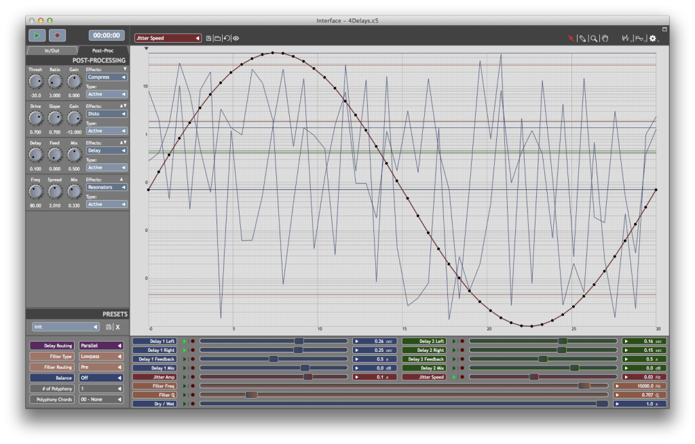
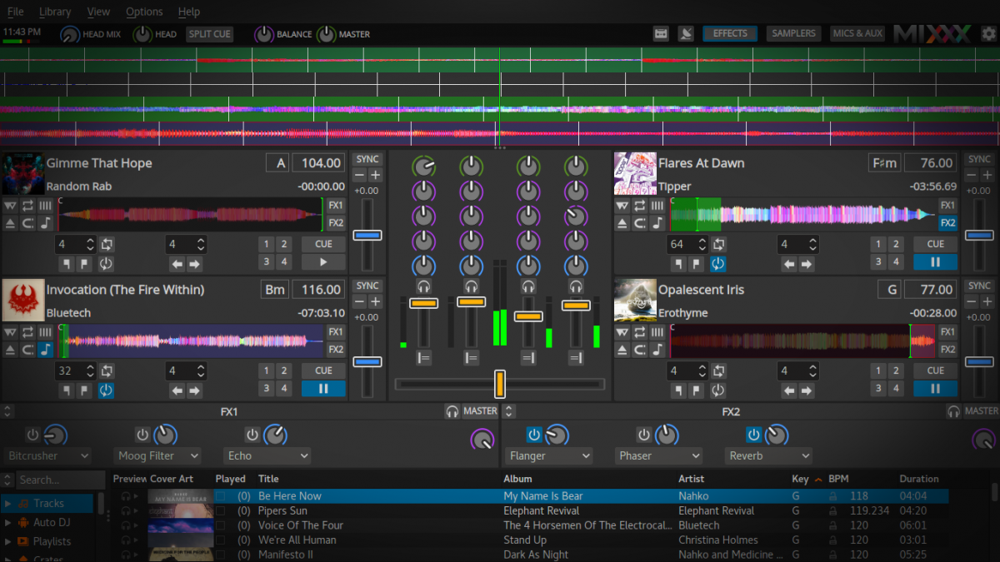
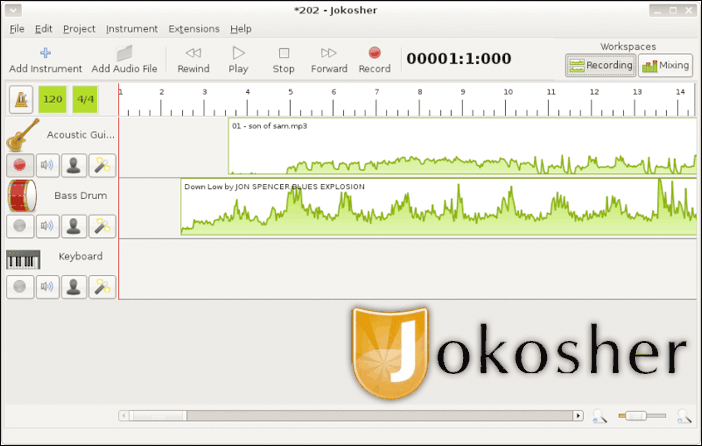

Editores de audio para linux
O Ardour é uma plataforma completa para a manipulação de arquivos de áudio. Ele trabalha com isso em todos os seus estágios, ou seja, captura, edição e mixagem, oferecendo um ambiente amplo e bem organizado, repleto de ferramentas que colocam os detalhes todos em suas mãos. Além disso, você pode importar áudio ou arquivos MIDI ou então plugar um teclado ou mesmo um microfone ao PC para abastecer o Ardour de conteúdo. O programa se autoproclama indicado para músicos, engenheiros de som, editores de trilhas sonoras e compositores. Seu visual multifaixa colabora ainda mais para uma ótima experiência de uso. Além disso, o Ardour tem suporte para plugins e trabalha, inclusive, em conjunto com mesas físicas de controle de som. Ou seja, uma solução completa, gratuita e eficiente.

O Audacity também conta com versões para o Windows e faz bastante sucesso no sistema operacional da Microsoft. No Linux não seria diferente, pois aqui estão reunidos recursos bem interessantes em um visual limpo e acessível, apesar de não ser tão avançado quanto outros nomes desta lista. Aqui, porém, você encontra ferramentas para capturar áudio, pode importar arquivos de seu computador, manipula tudo em um ambiente multifaixa, determina a qualidade do som, aplica efeitos para redução de ruído e muito mais. Enfim, a fama que precede este aplicativo não é à toa. Quem preferir, pode usar os inúmeros atalhos de teclado oferecidos pelo Audacity. Ele também tem suporte para plugins e para módulos experimentais que incrementam as suas funções. Para completar, há ainda inúmeros perfis de efeitos a fim de aprimorar a sua edição.

Cecilia é um sofisticado software voltado para o processamento de áudio de modo interativo e em tempo real. É possível realizar uma série de composições sonoras a partir das funcionalidades disponíveis. Por isso, é uma ferramenta pensada para produtores musicais. Além do Linux, há versões que podem ser executadas por Windows e Mac OS.
Mixxx o mais atrativo da ferramenta é a possibilidade de mixagem de som de uma forma bastante profissional. Além de Linux, Funciona em Mac OS e Windows. Conta com quatro decks com controles avançados, um menu de efeitos sonoros, permite gravação e transmissão e tem suporte para hardwares utilizados por DJ's.
Jokosher é uma opção simples para a edição de áudio no Linux, o Jokosher talvez seja um dos programas mais indicados para quem está em busca de algo que faça o simples com qualidade. Ele pode dar conta de necessidades básicas de forma perfeitamente satisfatória. Isso porque conta com uma interface limpa e fácil de ser compreendida inclusive por quem é leigo no assunto. Além disso, ele funciona na base de ambientes de trabalho, permitindo que você oculte ou exiba diferentes janelas conforme a necessidade do momento. Porém, além do básico, o Jokosher também é capaz oferecer recursos potentes. É possível capturar e unir várias faixas de áudio, gravar sons a partir de diferentes instrumentos musicais e muito mais. Filtros e efeitos complementam os recursos deste ótimo programa.
